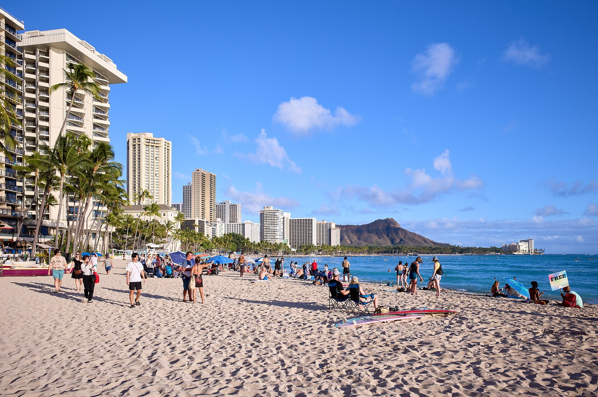

01 · Honolulu, Oʻahu
Waikīkī Beach
Oʻahu’s classic urban shoreline: a string of public sand segments in Honolulu, fronting the hotels along Kalākaua Avenue, with a long tradition of surfing and outrigger canoeing. The sand and water are public even where hotel chairs sit on the beach. As of the official Hawaii Ocean Safety lifeguard list checked on 23 November 2026, Waikīkī towers at Duke’s, Kuhio, Queens and Kapiʻolani Park are staffed Monday–Sunday, 8:00 a.m.–6:30 p.m. We are not publishing a parking-fee figure; published numbers disagreed, and we did not find a single official rate to lock today.
Tip: Stay in the flagged, lifeguarded stretches and check current conditions before you swim. A hike at nearby Diamond Head State Monument is a separate visit and has used timed entry for non-residents — check the official DLNR page if you plan to go up. It is not required to visit the beach.
Directions: Google Maps · Apple Maps
Photo: Frank Schulenburg, CC BY-SA 4.0, via Wikimedia Commons
Sources: Go Hawaii: Waikīkī Beach · Hawaii Ocean Safety: lifeguarded beaches · DLNR: Diamond Head State Monument
See Waikīkī Beach on our Beaches deck →
Find a stay near Waikīkī Beach →